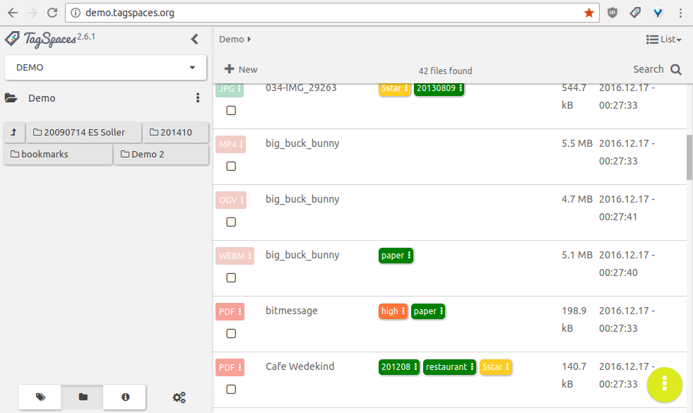
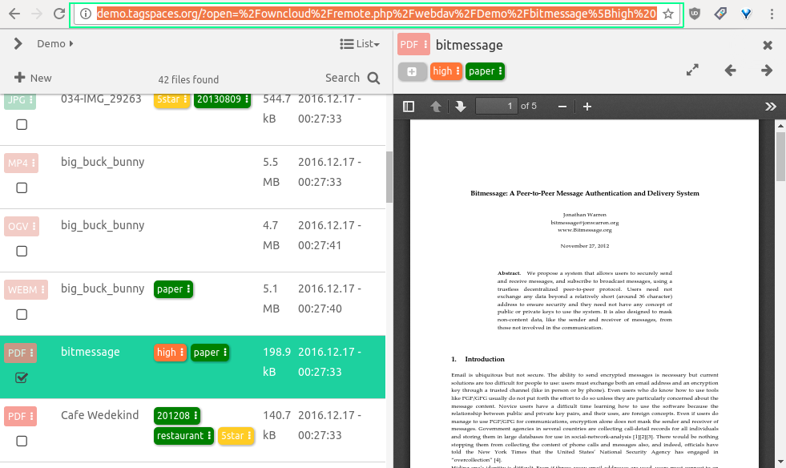
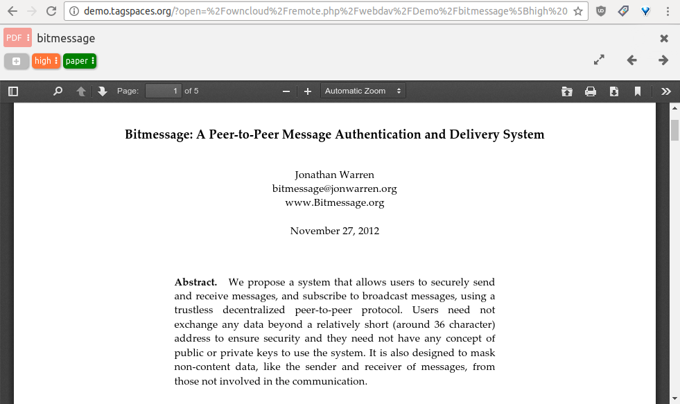

Self Hosting TagSpaces
Motivation
Almost since the very first releases of TagSpaces back in the 2013, many users did requested a server based version of TagSpaces. They wanted to use the convenient tagging workflow of TagSpaces on their self hosted Nextcloud/ownCloud or in general WebDAV instances. So starting from today this is possible, TagSpaces can now run on servers and once installed you can access your files from anywhere.
Download and Installation
The current version can of the WebDAV version can be downloaded from here.
Note Please handle the current status of the implementation is a technology preview, which in our opinion is still not suitable for production use on Internet.
In order to use the hosted version you need a working WebDAV server. The current release was tested with success on ownCloud which is based itself on the sabre/dav WebDAV server. On Ubuntu the installation steps are as following:
- Install Apache webserver (nginx webserver with its webdav extension is reported also to work)
- Install Nextcloud/ownCloud or any other WebDAV server
- Unzip the hosted version of TagSpaces somewhere in the www root folder of Apache. Currently the TagSpaces should be on the same host/ip and using the same port as the WebDAV server. This is so because of the XSS prevention build in the modern internet browsers.
- Assuming ownCloud is installed in
/var/www/owncloudand TagSpaces in/var/www/tagspacesyou have to type something like this in your terminal:
cd /var/www
sudo chmod -R 755 tagspaces
sudo chown -R your_www_group:your_www_user tagspaces
- Open your browser and enter:
127.0.0.1/tagspaces. The TagSpaces UI should be loaded. - Create a new location with the following path:
/owncloud/remote.php/webdav - Give a name to your location and save.
- A dialog for credentials entering will appear. Enter here your ownCloud username and password.
- That's all, you can now browse your files in TagSpaces.
Note: If the dialog prompting for the user credentials does not appear and you have running Nextcloud/ownCloud in some other browser tab, you have to logout there and reload the tab running TagSpaces.

It is interesting to mention that you can open also your ownCloud contacts by creating a location with a path like /owncloud/remote.php/carddav/addressbooks/ilian/contacts. This does not make currently much sense, because you only see a list with VCF files, but who knows perhaps somebody will write a contacts perspective and VCF viewer for TagSpaces some day.
Demo
You can experience a live demo of the TagSpaces webdav version on demo.tagspaces.org. The username and password are both demo.
Sharing links to files from the webdav version
tbd


Starting the WebDAV edition locally for testing
There is a script called webdavserver.js located in the data/web , which can be started with:
node data/web/webdavserver.js
or
npm run webdav
This command will start a local node.js based WebDAV server on http://127.0.0.1:8000. Open your browser and enter the following URL:
http://127.0.0.1:8000/index.html
You will be prompted for user credentials, which are username: demo and password: demo and now you should be able to work with the WebDAV version of TagSpaces.